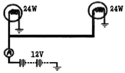
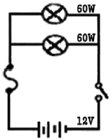
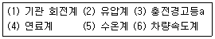

자동차정비기능장 (2010-07-11 기출문제)
1과목: 임의구분
1. MAP센서 방식의 전자제어 연료분사장치 기관에서 분사밸브의 분사시간 1t(ms)를 구하는 공식으로 맞는 것은? (단, 기본분사시간 Pt, 기본분사시간 수정계수 c, 분사밸브의 무효분사시간 Vt)
- lt = Pt × c + Vt
- lt = Pt + c + Vt
- lt = c × Vt + Pt
- lt = Pt × Vt + c
(정답률: 57%)

2. 1000m의 비탈길을 왕복할 때 올라가는데 2L, 내려가는데 1.5L의 가솔린을 소비할 경우 평균연료소비율은?
- 약 0.35km/L
- 약 0.473km/L
- 약 0.57km/L
- 약 0.648km/L
(정답률: 51%)
3. 산화 질코니아 산소센서를 점검할 때 주의할 사항으로 틀린 것은?
- 엔진을 충분히 워밍업시키고 엔진회전수를 2000~3000rpm까지 상승시켜 배기관을 뜨겁게 한다.
- 디지탈 회로시험기를 사용하여 출력값을 읽을 때는 전압으로 선택하여 출력단자에 접속한 후 엔진의 가동상태에서 측정한다.
- 배기관이 뜨거워진 상태에서 측정하며, 엔진 회전수에 따라 출력값의 변화를 확인한다.
- 엔진이 가동상태에서 출력 전압은 항상 일정하게 출력되어야 정상이며, 값이 변동시에는 센서를 교환한다.
(정답률: 72%)
4. 전자제어 가솔린분사장치에서 연료펌프에 대한 내용으로 틀린 것은?
- 시동 시에는 축전지 전원으로 구동되고, 시동 후에는 콘트롤 유닛(ECU)에 의해 제어된다.
- 일반적으로 베이퍼록 방지 및 정비성 향상을 위해 연료 탱크 외부에 설치한다.
- 비교적 큰 전류가 흐르므로 컨트롤 릴레이 등에서 전원을 제어한다.
- 엔진 회전신호가 검출되어야 정상적으로 작동한다.
(정답률: 79%)
5. 디젤기관의 연료 분사펌프 구조에서 거버너(조속기)의 역할은?
- 연료 분사량을 제어한다.
- 연료 분사시기를 제어한다.
- 연료 압력을 일정하게 한다.
- 연료 분사상태를 무화시킨다.
(정답률: 80%)
6. 냉각장치에서 수온조절기 내부에 왁스와 고무가 봉입되어 냉각수 온도에 따라 밸브 통로를 개폐하는 방식은?
- 펠릿형
- 벨로즈형
- 바이메탈형
- 에테르형
(정답률: 78%)
7. 자동차용 윤활유에 물리적 또는 화학적 성질을 강화하여 휸활성을 향상시키기 위해 사용하는 첨가제가 갖추어야 할 조건으로 틀린 것은?
- 윤활유에 대한 첨가제의 용해가 충분할 것
- 휘발성이 낮을 것
- 물에 대한 안정성이 우수할 것
- 첨가제 상호간 빠른 반응으로 침전될 것
(정답률: 87%)
8. 터보차저 기관의 특징으로 틀린 것은?
- 배기가스의 동력을 이용한다.
- 충진 효율의 증가로 연료소비율이 낮아진다.
- 기관의 압축비를 높일 수 있어 유리하다.
- 같은 배기량으로 높은 출력을 얻을 수 있다.
(정답률: 66%)
9. 전자제어 가솔린 기관에서 연료분배 파이프 내에서 일어나는 연료압력의 파동을 억제하고 소음을 저감시키는 장치는?
- 롤러 펌프
- 맥동 댐퍼
- 마그넷 모터
- 연료압력 조절기
(정답률: 77%)
10. 옥타가 85일 때 85란 의미는 무엇을 뜻하는가?
- 세탄의 체적 백분율
- α-메틸 나프탈렌 체적 백분율
- 정 헵탄의 체적백분율
- 이소옥탄의 체적 백분율
(정답률: 84%)
11. 실린더 연마가공 작업시 호닝 가공이란?
- 실린더와 피스톤의 융착을 방지하기 위한 연마가공이다.
- 보링 작업시 편차를 없애는 가공이다.
- 보링작업에서 생긴 바이트 자국을 제거하는 연삭가공이다.
- 실린더 테이퍼를 수정하는 가공이다.
(정답률: 84%)
12. 고속디젤기관에 가장 적합한 사이클은?
- 사바데 사이클
- 정압 사이클
- 정적 사이클
- 디젤 사이클
(정답률: 84%)
13. 기관의 제동연료 소비율이 400g/kWh, 기관의 제동마력이 70kW, 연료의 저위발열량이 46200kJ/kg, 기관의 냉각 손실이 30%일 때 냉각손실 열량은?
- 388080kJ/h
- 488080kJ/h
- 588080kJ/h
- 688280kJ/h
(정답률: 50%)
14. 피드백 믹서 방식의 LPG기관에서 긴급차단 솔레노이드 밸브의 역할은?
- 급가속 시 솔레노이드밸브를 열어 연료를 보충한다.
- 기온이 낮을 때 솔레노이드 밸브를 여는 역할을 한다.
- 주행 중 엔진 정지 시 ECU에 의해 솔레노이드 밸브가 OFF되어 연료를 차단시킨다.
- 주행 중 돌발사고로 엔진정지 시 ECU는 액ㆍ기상 솔레노이드 밸브를 연다.
(정답률: 83%)
15. 피스톤과 커넥팅 로드를 연결하는 피스톤 핀의 고정 방법이 아닌 것은?
- 고정식
- 반 부동식
- 3/4부동식
- 전 부동식
(정답률: 72%)
16. 연료탱크로부터 발생한 증발가스를 저장했다가 운전 중 흡입 부압을 이용해 흡기 매니폴드에 보내는 것은?
- 캐니스터
- 에에콘트롤 밸브
- 인탱크 필터
- 에어 바이패스 솔레노이드 밸브
(정답률: 90%)
17. 4사이클 V-6형 기관의 지름 × 행정이 78mm×78mm이고 회전수가 3500rpm일 때 실제로 흡입된 공기량이 258382cc이라면 체적효율은?
- 70%
- 76%
- 66%
- 62%
(정답률: 43%)
18. 과급압력의 증가에 따라 연소압력이 상승 되는데 이것을 보완하는 방법은?
- 압축비를 증가시킨다.
- 급기의 밀도를 감소시킨다.
- 급기를 냉각시킨다.
- 냉각수 온도를 증가시킨다.
(정답률: 69%)
19. 과거의 자료를 수리적으로 분석하여 일정한 경향을 도출한 후 가까운 장래의 매출액, 생산량 등을 예측하는 방법을 무엇이라 하는가?
- 델파이법
- 전문가패널법
- 시장조사법
- 시계열분석법
(정답률: 47%)
20. 로트의 크기 30, 부적합품률이 10%인 로트에서 시료의 크기를 5로 하여 랜덤 샘플링할 때, 시료 중 부적합 품수가 1개 이상일 확률은 약 얼마인가? (단, 초기하분포를 이용하여 계산한다.)
- 0.3695
- 0.4335
- 0.5665
- 0.63⑤
(정답률: 32%)
2과목: 임의구분
21. 다음 중 브레인스토밍(Brainstorming)과 가장 관계가 깊은 것은?
- 파레토도
- 히스토그램
- 회귀분석
- 특성요인도
(정답률: 56%)
22. 작업개선을 위한 공정분석에 포함되지 않는 것은?
- 제품 공정분석
- 사무 공정분석
- 직장 공정분석
- 작업자 공정분석
(정답률: 56%)
23. 관리도에서 점이 관리한계 내에 있으나 중심선 한쪽에 연속해서 나타나는 점의 배열현상을 무엇이라 하는가?
- 연
- 경향
- 산포
- 주기
(정답률: 54%)
24. 로트의 크기가 시료의 크기에 비해 10배 이상 클 때 시료의 크기와 합격판정개수를 일정하게 하고 로트의 크기를 증가시키면 검사특성곡선의 모양 변화에 대한 설명으로 가장 적절한 것은?
- 무한대로 커진다.
- 거의 변화하지 않는다.
- 검사특성곡선의 기울기가 완만해진다.
- 검사특성곡선의 기울기 경사가 급해진다.
(정답률: 63%)
25. 전자제어 현가장치에서 자세 제어기능으로 틀린 것은?
- 안티 롤 젱
- 안티 다이브 제어
- 안티 스쿼트 제어
- 안티 트레이스 제어
(정답률: 67%)
26. 수동변속기의 록킹 볼(locking ball)이 마멸되면 어떤 현상이 일어나는가?
- 기어가 이중으로 물린다.
- 기어가 빠지기 쉽다.
- 변속시에 소리가 난다.
- 변속 레버의 유격이 크게 된다.
(정답률: 78%)
27. 제동 배력 장치 중에 파워 실린더의 내압은 항상 진공을 유지하고 작동시에 공기를 보내어 파워 피스톤을 미는 형식은?
- 브레이크 부스터(brake booster)
- 하이드로 마스터(hydro master)
- 마스터 백(master vac)
- 에어 마스터(air master)
(정답률: 69%)
28. 유성기어 장치에서 선 기어 잇수가 20, 유성기어 잇수가 10, 링 기어 잇수가 40일 때 선기어를 고정하고 캐리어를 100회전 했을 때 링 기어는 몇 회전하는가?
- 150회전 증속
- 150회전 감속
- 130회전 증속
- 130회전 감속
(정답률: 58%)
29. 엔진의 회전 속도보다 추진축의 속도를 빠르게 하여 연비를 향상시키는 장치는?
- 댐퍼 클러치 장치
- 자동 클러치 장치
- 차동 제한장치
- 증속 구동장치
(정답률: 69%)
30. 애커먼 장토식 조향원리에 대한 설명으로 틀린 것은?
- 조향방향과 조향각이 변화하여도 하중이 분포하는 면적은 거의 변화가 없다.
- 킹핀과 타이로드의 양단을 잇는 그 연장성이 후차축의 중심과 일치하여야 한다.
- 좌우 전륜의 회전축 연장선이 후차축의 연장선에서 만나서 차륜이 동일점을 중심으로 선회하여야 한다.
- 외측륜의 조향각이 내측의 조향륜의 조향각보다 커야한다.
(정답률: 51%)
31. 엔진룸의 유효면적을 넓게 확보할 수 있으며 부품수가 적고 정비성이 좋아서 앞 차축에 가장 많이 사용되는 독립현가 방식은?
- 위시본형
- 트레일 링크형
- 맥퍼슨형
- 스윙 차축형
(정답률: 81%)
32. 자동차의 최소 회전 반경은 바깥쪽 앞바퀴 자국의 중심선을 따라 측정했을 떄에 몇 미터를 초과해서는 안되는가?
- 15m
- 11m
- 12m
- 13m
(정답률: 78%)
33. 자동차의 타이어에서 발생하는 힘에 대한 성분으로 항력(drag)에 대해 설명한 것은?
- 타이어 진행 방향에 대한 직각 방향의 성분
- 타이어 진행 방향과 같은 방향의 성분
- 타이어 진행 방향에 대한 직각 방향의 역성분
- 타이어 진행 방향과 같은 방향의 역성분
(정답률: 60%)
34. ABS장치에 포함된 것으로 초기 제동시 전륜보다 후륜이 먼저 록킹(Locking)되는 것을 방지하기 위해 후륜의 유압을 알맞게 재어하는 것은?
- 셀릭트로(Select Low)제어
- BAS(Brake Assist System)제어
- EBD(Electormic Brake-force Distribution)제어
- 트렉션(Traction)제어
(정답률: 68%)
35. 자동변속기에서 변속진행 중 토크와 회전속도의 변화를 매끄럽게 하기 위한 변속품질 제어가 아닌 것은?
- 록 업 클러치 제어
- 라인압력 제어
- 변속 중 점화시기 제어
- 피드백 학습 제어
(정답률: 54%)
36. 전자제어 제동장치(ABS)의 구성품이 아닌 것은?
- 하이드롤릭 유닛
- 어큐뮬레이터
- 휠 스피드 센거
- 차고센서
(정답률: 79%)
37. 레이디얼 타이어 호칭에서 195/60 R14에서 60은 무엇을 표시하는가?
- 타이어 폭
- 속도
- 하중 지수
- 편평비
(정답률: 87%)
38. 유압식 브레이크 장치에서 제동시 제동 이음이 발생하는 원인으로 거리가 먼 것은?
- 브레이크 드럼에 먼지 및 이물질 과다 유입
- 브레이크 라이닝 표면의 정화
- 브레이크 라이님 과다한 마모
- 브레이크 라이닝 오일 유입
(정답률: 64%)
39. 동력 조향장치에서 핸들이 무거운 원인으로 맞는 것은?
- 호스나 유압라인에 공기가 유입 되었다.
- 오일의 온도가 약간 상승하였다.
- 타이어의 공기압이 높다.
- V벨트의 유격이 없다.
(정답률: 82%)
40. 클러치 폐달 레버에서 작용점의 힘이 120kgf일 때 폐달의 답력은? (단, 작용접에서 폐달까지와 작용점에서 고정점까지의 비는 5:2이다.)
- 약 17.2kgf
- 약 24.3kgf
- 약 34.3kgf
- 약 86.2kgf
(정답률: 38%)
3과목: 임의구분
41. 브레이크 라이닝 및 브레이크 액이 구비해야 할 조건으로 틀린 것은?
- 라이닝은 내열성, 내구성을 갖추어야 한다.
- 라이닝은 고속 슬립상태에서도 마찰 계수가 일정해야 한다.
- 브레이크 액은 압축성이 있어야 한다.
- 브레이크 액은 빙점이 낮아야 한다.
(정답률: 63%)
42. 변속비가 3:1, 종 감속비가 5:1인 자동차외 기관 회전 속도가 1500rpm일 때 차량의 속도는?
- 약 10km/h
- 약 15km/h
- 약 20km/h
- 약 25km/h
(정답률: 40%)
43. 차량이 선회할 때 코너링 포스(cornering force)에 직접 영향을 주는 요소와 거리가 먼 것은?
- 바퀴의 수직 하중
- 바퀴의 동적 평형
- 림(rim)의 폭
- 바퀴의 공기 압력
(정답률: 48%)
44. 자동차용 축전지가 완전 충전되어 있는 상태의 전해액은?
- H2SO4
- H2O
- PbSO4
- PbO2
(정답률: 75%)
45. 12V의 축전지에 24W의 전구 2개를 그림과 같이 접속 하였을 때 Ⓐ에 흐르는 전류는?

- 2A
- 3A
- 4A
- 6A
(정답률: 63%)
46. 그림의 회로에서 퓨즈의 용량으로 가장 적합한 것은?

- 5A
- 10A
- 15A
- 30A
(정답률: 60%)
47. 자동차용 직류 분권식 전동기의 과징으로 틀린 것은?
- 전기자코일과 계자코일이 병렬로 연력된 방식이다.
- 전기자코일과 계자코일에 공급되는 전압이 일정하다.
- 전동기의 회전 속도 변동이 작다.
- 기관을 크랭킹하는 기동 전동기에 적합하다.
(정답률: 53%)
48. 냉방장치에서 자동차 실내의 냉방 효과는 어떤 경우에 나타나는가?
- 증발기에 흡입 열량이 있을 때
- 응축기에서 방출 열량이 있을 때
- 공급에너지에 열량의 비가 발생될 때
- 압축기에서 공급되는 에너지가 있을 때
(정답률: 57%)
49. 점화장치에서 전자 배전 점화장치(DLI)의 특징으로 맞는 것은?
- 배전기식 보다는 성은 면에서 떨어진다.
- 2차 전압의 손실을 최소화 할 수 있다.
- 점화 코일의 수량을 줄일 수 있다.
- 고속형 기관에서 불리하다.
(정답률: 76%)
50. 자동차에 사용되는 반도체센서 중 압력을 검출하는 센서가 아닌 것은?
- 대기압 센서
- 과급압력 센서
- 맵 센서
- 핫필름 센서
(정답률: 74%)
51. 자동차용 교류 발전기에서 스테이터 코일의 Y결선에 대한 내용으로 틀린 것은?
- 각 코일의 한 끝은 공통점으로 접속하고 다른 쪽 끝을 각각 결선 한 것이다.
- 선간 전압은 각 상전압의 √3배가 된다.
- 전류를 이용하기 위한 결선 방법이다.
- 저속에서 발생 전압이 높다.
(정답률: 56%)
52. 자동차용 계기장치에서 작동원리가 유사하게 짝지어진 것은?

- (3) - (5)
- (1) - (2) - (4)
- (1) - (6)
- (2) - (4) - (6)
(정답률: 82%)
53. 서로 다른 두 가지 색이 특정 광원 아래에서는 같은 색으로 보이는 현상 즉, 물리적으로는 다른 색이 시각적으로 동일한 색으로 보이는 현상을 무엇이라하는가?
- 저건 등대 현상
- 보색 잔상 현상
- 겔화 현상
- 색 얼룩 현상
(정답률: 51%)
54. 자동차용 합성수지의 특징이 아닌 것은?
- 고온에서 열 변형이 없다.
- 내식성, 방습성이 우수하다.
- 비중이 0.9 ~ 1.3 정도로 가볍다.
- 복잡한 형상의 성형이 우수하다.
(정답률: 71%)
55. 특수 안료에 속하지 않는 것은?
- 아산화동
- 산화수은
- 산화안티몬
- 크레이
(정답률: 72%)
56. 승용차에서 센터필러(center pillar)가 없는 보디 구조를 지닌 것은?
- 세단(4인승)
- 쿠페
- 리무진
- 스테이션 왜건
(정답률: 82%)
57. 용접으로 결합된 손상 패널을 뗴어내는 시기로 맞는 것은?
- 엔진, 새시와 함께 제거
- 손상 차체 교정 전에 제거
- 손상 차체 교정 작업과 동시 제거
- 바디 주요부의 치수를 맞춘 후에 제거
(정답률: 32%)
58. 다음 중 도장할 때 주름이 생기는 가장 큰 원인은?
- 너무나 느리게 도장하기 때문에
- 너무나 빨리 도장하기 때문에
- 너무나 두껍게 도장하기 때문에
- 너무나 엷게 도장하기 때문에
(정답률: 65%)
59. 열간 가공의 특징이 아닌 것은?
- 큰 변형을 줄 수 있다.
- 재질이 고르다.
- 처음 단계의 소성 변형에 적합하다.
- 동력의 소요가 적다.
(정답률: 43%)
60. 퍼티(putty)작업의 목적으로 옳은 것은?
- 광택을 증가하기 위해
- 접착력을 강화시키기 위해
- 부착력을 향상시키기 위해
- 평활성을 유지시키기 위해
(정답률: 82%)